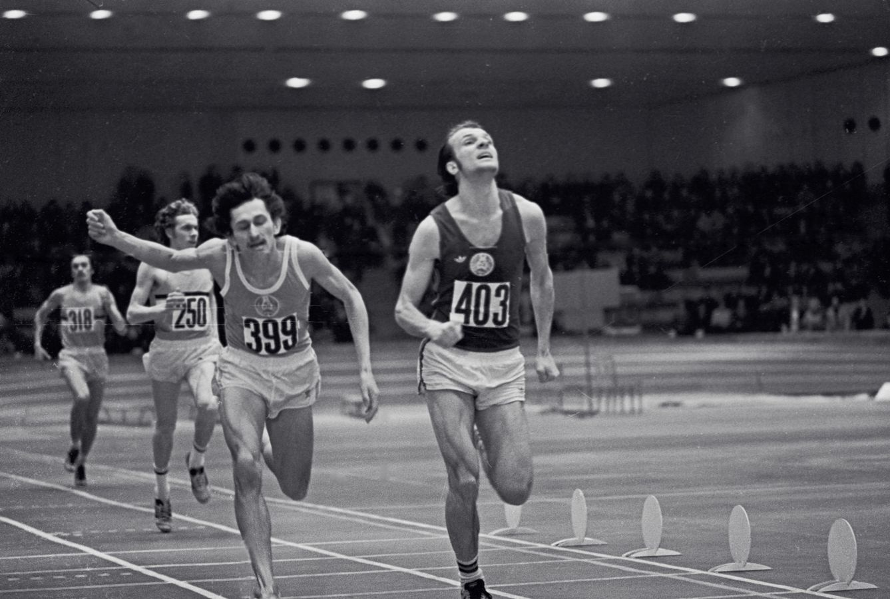

Бронза Олимпиады-1980
Лёгкая атлетика (бег 800 м)
Николай Киров — белорусский советский легкоатлет, специалист по бегу на средние дистанции. Родился в 1957 году. Бронзовый призёр Олимпийских игр 1980 года в Москве в беге на 800 метров [citation:6].
Был ведущим советским бегуном на 800 метров в начале 1980-х. Помимо олимпийской бронзы, завоевал серебро чемпионата Европы 1982 года на 800 м и серебро Кубка Европы 1981 года на 1500 м. Установил мировой рекорд в эстафете 4×800 метров в 1978 году (7:08.1) [citation:6].
Пятикратный чемпион СССР: 800 м (1978), 1500 м (1982–83), эстафета 4×800 м (1979, 1981). Личный рекорд на 800 м — 1:45.11 (1981). После завершения карьеры стал тренером по лёгкой атлетике [citation:6].